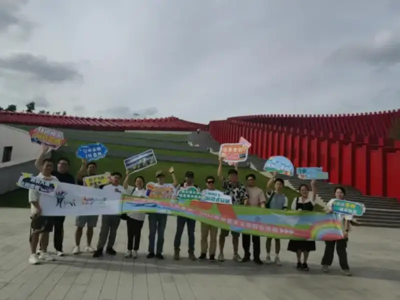
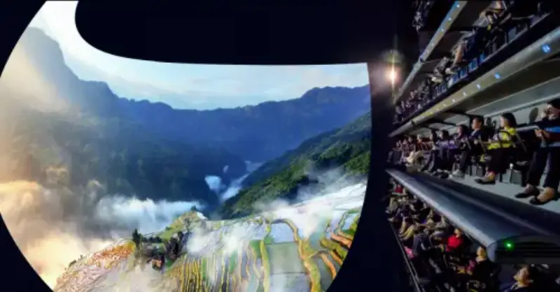
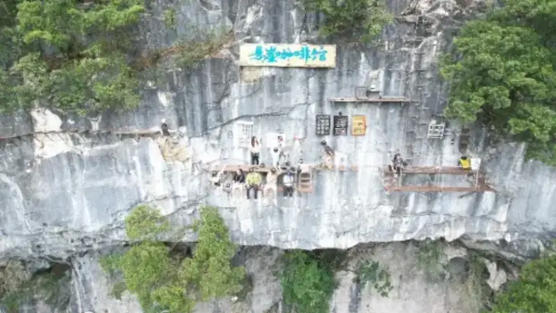
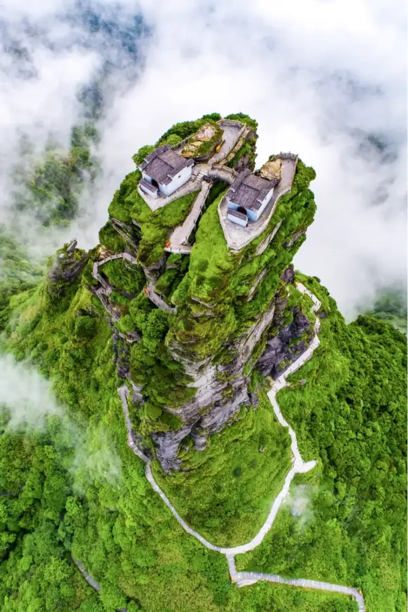
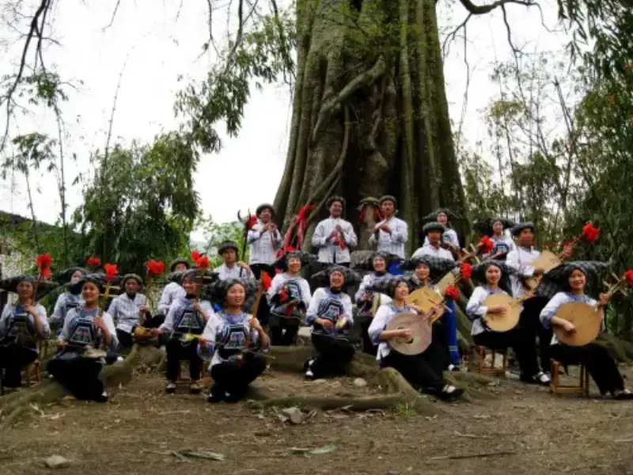
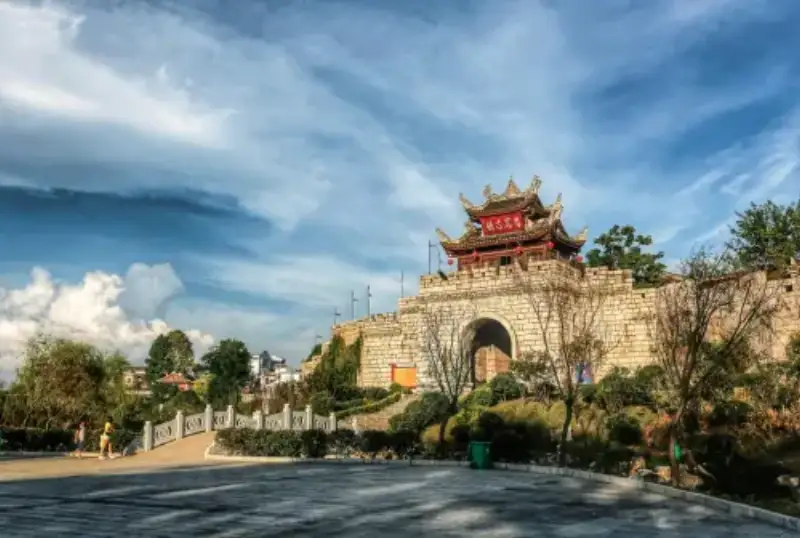
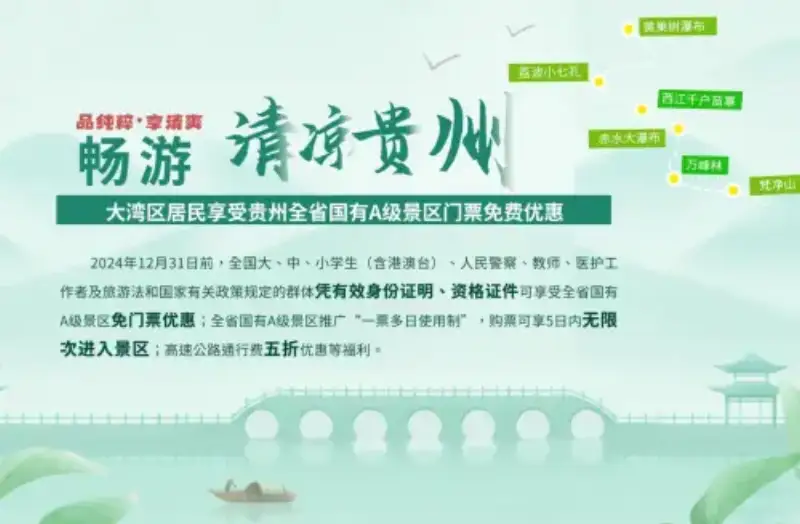
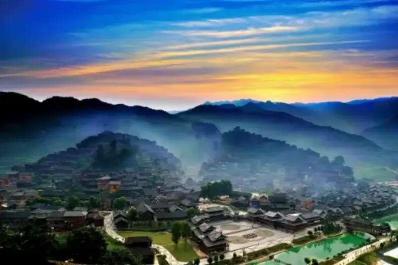
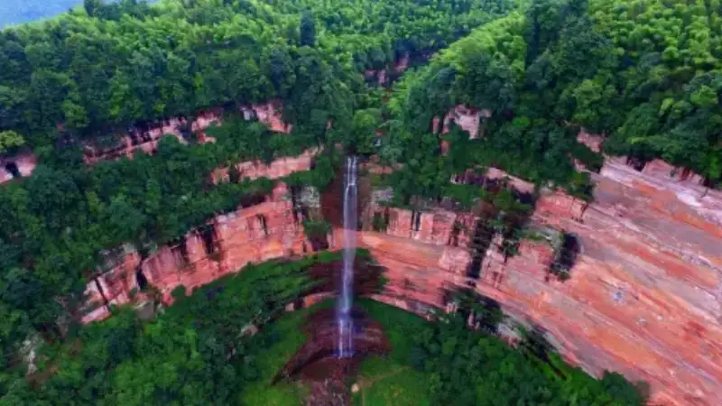

On July 8, the summer culture-and-tourism press trip "Air and Scenery Linked: Fly over Guizhou" started in Guiyang. A press team formed by Phoenix Weekly, the Hong Kong Sing Tao Daily, the Macau Commercial Daily, Sichuan Hongxing News, Hubei Jimu News, and other major outlets joined YouTube creators "simon" and "HK Youth", plus multi-million-follow bloggers "Lüyou Yuema" and "Bixia Huahua". They took the "Connected Flights" route to start a cool summer trip through Guizhou.

"Red Ribbon" Long March Digital Art Museum
China's top summer retreat province, cool weather at its best
The press team tested one of the "Connected Flights" routes: Guiyang to Xingyi to Libo to Tongren. They set out from the new Guiyang landmark, the "Red Ribbon" Long March Digital Art Museum. First they saw the mix of technology and culture. Then they used the first 8K9D cinematic LED dome flight theater to "tour" colorful Guizhou, and got a preview of the "Huang Xiaoxi Chifan" catchphrase spots.

Flight theater at the "Red Ribbon" Long March Digital Art Museum
Guizhou has an average summer temperature of 23°C. It is almost the coolest summer at the same latitude, and is known as China's top summer retreat province. It has rugged hills and mountains, dense rivers and water systems, and an average altitude of over 1,100 meters. The plants are thick, and the area has many waterfalls, caves, gorges, and lakes. It is a "natural big air conditioner". While the rest of the country is in "hot pot" mode, Guizhou is the place to escape the heat. Every July and August, crowds from across China pour into this cool land of 176,000 square kilometers. They stay from a few days to two or three months. The green wonders of this "green karst kingdom" make visitors linger.
Huangguoshu Waterfall
Guizhou sits at low latitude and high altitude, with rich moisture. It lies on the "golden climate zone" near 25 degrees north. This clear, misty ecology gave rise to rich natural secrets such as the "Huang Xiaoxi Chifan" spots. At Wanfenglin in Xingyi, the team saw what the traveler Xu Xiake described: "Of all the peak forests under heaven, only here do the peaks form a forest." The top travel blogger "Lüyou Yuema" kept saying: "It is so photogenic. This is the most beautiful peak forest that National Geographic strongly recommends. It is perfect for a summer stay."
Wanfenglin peak forest, Xingyi
"Bixia Huahua" is a top influencer with tens of millions of followers, and this was her first time at the Xiaoqikong bridge in Libo. After she tried cool summer activities such as cliffside coffee in the adventure forest and underground exploration, she said: "I never imagined escaping the heat could be this cool, wild, and beautiful. Guizhou is a summer paradise."

Cliff coffee in the Libo adventure forest
"Aimei Lab" is a 2024 Weibo travel and creative creator. After climbing Fanjingshan, the "city in the sky", she wrote on Weibo: "I listened to the wind, and went to the city I wanted to visit!" She told her fans to escape the heat at the Tongren Grand Canyon and climb Fanjingshan to see nature's handiwork.

Buddhist pure land: Fanjingshan, Tongren
Guizhou's summer draws people in for more than cool weather. 1.258 million mountains hold beautiful natural scenery. Eighteen native ethnic groups live with the mountains and the rivers. Cultural remains from every period of history make Guizhou a "thousand cultural islands". At the Xingyi Prefectural Examination Hall, the team learned about Zhang Ying, who was the prefect of Xingyi. He added lamp oil to encourage students to study and pass the exams. This is the origin of the "add oil" culture. At the Buyi Eight-Tones Hall, they heard the Buyi "Eight Tones sitting-singing", called a "living fossil of sound".

Living fossil of sound: Buyi Eight Tones sitting-singing
As the saying goes, "A different mountain has a different tribe, ten li has a different custom, a hundred li has different rites." Guizhou is called a "thousand cultural islands". It has the Yi torch festival, the Anshun regional opera, Buyi batik, and Dong grand choir. This colorful culture, joined with the grand and beautiful landscape, makes a vivid picture of Guizhou.
Anshun Tunpu regional opera, a living fossil of theater
People say "come to Guizhou to see the sea". Visitors who come to escape the heat are often struck by Guizhou's unique marks of the ages. In the cave of the Libo adventure forest, the clearly visible sea lilies record the change from ancient sea to land in this "kingdom of paleontology". Tourists who relax in a guesthouse in Qingyan Ancient Town may not know that the Qingyan fossil group, 230 million years old, lies right beside them.

Qingyan Ancient Town, Guiyang
"Connected Flights" make a tour of Guizhou easier
Guizhou is the "back garden of the Greater Bay Area". The high-speed rail from Hong Kong to Guiyang takes just over four hours. Now the return routes between Guiyang and Hong Kong, and between Guiyang and Macau, have reopened. People from the Bay Area can fly across the mountains and sea to Guiyang in just over an hour. Guizhou also offers a "four free, one extra, one cut" tourism policy. Residents of the Greater Bay Area with a valid ID get free entry to state-owned A-level scenic spots across Guizhou (excluding paid licensed activities). Since the free-entry policy started, Bay Area visitors have shown strong and growing interest in Guizhou.
Pleasant weather, beautiful scenery, and the wildly popular village soccer, village basketball, and village songs are drawing more and more visitors to Guizhou for summer. To really feel Guizhou's beauty, the best way is to visit each place one by one. But Guizhou's mountains and waters spread across east, west, north, and south, so a one-stop tour is hard. To fix this pain point, Guizhou launched the "Connected Flights" product. It strings airports and scenic spots like pearls on a chain. It opens "air corridors" between several trunk and regional airports in the province. It lets visitors fly between the top spots. Once they arrive in Guizhou, they can move in fast and travel slow, and explore the unique charm of this hidden gem. The "Connected Flights" routes now cover two premium products: Guiyang to Xingyi to Libo to Tongren, and Guiyang to Moutai to Libo to Anshun. Take the Guiyang-to-Xingyi route the team flew. A nearly five-hour drive is cut to one hour. Visitors reach Guizhou's sights fast, and have plenty of time to enjoy the views and try new summer activities. "Connected Flights" also offers tailored services for different visitors, such as airport lounge access, small private car groups, scenic-spot VIP service, special dining, and quality stays.

The Hong Kong and Macau media and creators on the trip posted short recommendation videos on social platforms. They shared their experience of the premium "Connected Flights" product. The YouTube creator "HK Youth" said in his vlog: "Flying around Guizhou is so convenient. The special services are great. VIP access the whole way. It is awesome." The Hong Kong new media outlet "Dongzhou Jianniang Sanbao" said in an interview: "The air corridors Guizhou opened are convenient and thoughtful. One-stop airport service leaves more time to enjoy Guizhou."
The "Huang Xiaoxi Chifan" spots are never enough
As the top summer retreat province, Guizhou draws visitors for its cool weather, rich tourism resources, and reasonable travel costs. Ctrip data from the end of June shows that this summer, local travel orders in Guizhou rose 36% year on year. Inbound tour orders rose 214% year on year. The top spots are the "Huang Xiaoxi Chifan" sites.

Xijiang Thousand Miao Villages
The "Huang Xiaoxi" are the core of Guizhou's tourism resources. Huang stands for Huangguoshu Waterfall in Anshun. Xiao stands for Xiaoqikong in Libo, Qiannan. Xi stands for Xijiang Thousand Miao Villages in Qiandongnan. "Chifan" is a pun that sounds like the names of three more spots: Chishui Danxia in Zunyi, Wanfenglin in Qianxinan, and Fanjingshan in Tongren.

Chishui Danxia scenic area
The "Huang Xiaoxi Chifan" catchphrase shows the warm, simple hospitality of the people of Guizhou. It also sums up Guizhou's natural wealth in a few words. The six words link six calling cards of Guizhou, like pearls on a chain. They bring together three World Natural Heritage sites, four national 5A-level scenic spots, and one national tourist resort.
Of course, the "Huang Xiaoxi Chifan" spots have more than beautiful scenery and culture. They are also a great place for mountain outdoor sports. Simon, the Hong Kong creator on the trip, said in an interview: "I fell for Guizhou through Huang Xiaoxi Chifan. The catchy pun is a strong selling point for promotion."
Colorful Guizhou holds many beauties together. This summer, take a short flight. Feel the charm of the "Huang Xiaoxi Chifan" spots, and enjoy a cool summer in this mountain park province.